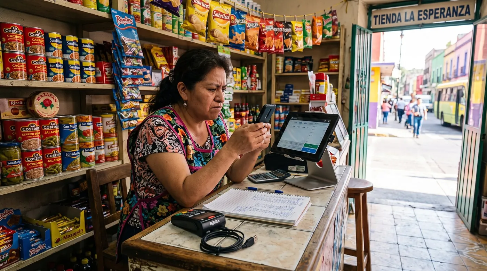

Te retuvieron el dinero y bloquearon la cuenta: qué hacer
Hay un desastre de comercio pequeño del que casi nadie escribe una guía, aunque los comerciantes lo cuenten por cientos en las páginas de reclamaciones. La venta se hizo. El cliente se fue contento. Y el dinero no llega, porque la empresa que procesa tus cobros ha decidido retenerlo. Una comerciante mexicana lo resumió así: «Le cobré a unos clientes con Billpocket y me bloquearon la cuenta. Tardan más de 120 días en liberar el dinero según». Esto es lo que está ocurriendo de verdad, y en qué orden conviene reaccionar.

Qué está pasando de verdad cuando «retienen» tu dinero
Con la misma palabra se describen tres cosas distintas, y cada una tiene una salida distinta. Conviene saber en cuál estás antes de escribir el primer correo.
Para seguir: antes de firmar nada, mira cuánto te cuesta de verdad tu TPV y después la calculadora de comisiones de cobro. Si te afecta, también controlar el fiado. Y si estás en Venezuela y no puedes pagar tus herramientas: pagar suscripciones en línea sin tarjeta.
Un retraso en la liquidación es un problema de calendario: el dinero existe, es tuyo, llega tarde. Molesto, y normalmente se resuelve con un ticket.
Una reserva es un colchón contractual y deliberado. La reserva rodante retiene un porcentaje de cada día y lo libera pasado un plazo fijo; la reserva fija retiene una cantidad. Suele estar descrita en tu contrato de comercio, y existe porque quien asume la pérdida si un cliente reclama un contracargo por algo que nunca recibió es el procesador, no tú.
Un bloqueo o cierre de cuenta es otra cosa. La relación se termina o se suspende, y el saldo se retiene frente al riesgo de contracargos futuros. Aquí aparecen los plazos largos: 90, 120, 180 días. Una comerciante chilena describió «la retención injustificada de fondos correspondientes a ventas realizadas por mi empresa… Las transacciones fueron válidas, cuentan con vouchers y registros», sin respuesta formal ni plazo.
Ese plazo largo no es un capricho, y entenderlo cambia el argumento que conviene usar. Las reglas de las marcas de tarjeta dan al titular una ventana amplia para disputar un cobro, así que un procesador que ha terminado la relación se queda sentado sobre una cola de contracargos posibles que ya no puede compensar con tus ventas futuras. Esa es la lógica. No justifica el silencio, pero discutir «no tienen derecho a retener nada» es más débil que discutir «su riesgo ya venció, aquí están las pruebas, libérenlo».
Los cinco motivos que disparan una retención
Si lees suficientes casos, se repiten siempre los mismos disparadores. Ninguno exige que hayas hecho nada mal.
- Un cambio brusco de volumen o de ticket medio. Es la historia más frecuente con diferencia. Un comerciante en España contó que un solo pago de cliente de 2.000 € terminó con «el cierre permanente de mi cuenta».
- Un desajuste entre el giro que declaraste y lo que realmente cobras. Si la cuenta dice cafetería y las operaciones parecen venta mayorista o entradas de eventos, el modelo de riesgo salta.
- Una denuncia o disputa aguas arriba. Un vendedor argentino describió una retención tras una denuncia ajena, sin ninguna vía de respuesta: «MercadoPago no me permitió realizar descargo ni defensa».
- Documentación que nunca te pidieron hasta ahora. Comprobantes de entrega, facturas, identificación, domicilio. A muchos comerciantes les piden fotos o vídeos del servicio prestado después del cobro.
- Ser una cuenta nueva. Poca antigüedad y tickets grandes es el perfil clásico. En Colombia, un comerciante describió el efecto contrario y más desconcertante: «los pagos no se reflejan, a veces te salen exitosos y a los días después te sale rechazado y no te llega la plata».
Las primeras 48 horas, en orden
Casi todos estos relatos terminan con semanas perdidas en el bucle del soporte, y el motivo suele ser que las primeras 48 horas se gastaron al teléfono en vez de por escrito. Hazlo en este orden.
- Deja de cobrar hoy mismo con ese proveedor. Parece drástico y es el paso más importante: cada venta que sigas metiendo por una cuenta bloqueada es más dinero tuyo al otro lado de la puerta.
- Pide el motivo por escrito. Una sola pregunta precisa por correo o por el chat de la app, no por teléfono: cuál es el motivo concreto de la retención, cuál es el plazo de revisión, en qué fecha se liberan los fondos y qué documento necesitan de mí. Una llamada no deja rastro y la respuesta cambia con cada agente.
- Manda las pruebas de golpe y sin que te las pidan. Registro de ventas con qué se vendió y cuándo, facturas o tickets, comprobante de entrega o de servicio prestado, y alta de la actividad. Todo en un mensaje numerado, no en cinco correos durante quince días.
- Haz capturas todos los días. Saldo, calendario de liquidaciones, cada mensaje. Es habitual perder el acceso al propio portal: un comerciante argentino pasó tres días sin poder entrar, con un código de verificación que no llegaba y un teléfono que «nunca atiende, ya van 3 días con esperas de 40 minutos».
- Escribe la cronología sobre la marcha. Fecha, hora, con quién hablaste, qué te dijeron. Ese documento es lo que hace que funcione después una reclamación ante el regulador, y es imposible reconstruirlo de memoria dos meses más tarde.
Una advertencia: devolver el dinero al cliente para «quitar el riesgo» suena inteligente y puede salir mal. Una comerciante mexicana pidió justamente eso, «que mejor reembolsaran al cliente para cobrarlo yo directamente», y meses después seguía sin resolverse, aunque el propio proveedor confirmara que tenía el dinero. Si lo propones, hazlo por escrito y con acuerdo escrito.
Cómo escalar más allá del soporte
El soporte de primera línea no tiene competencia para liberar tu dinero. Repetir ese bucle no es insistencia, es gastar el único activo que te queda, que es el tiempo.
- Pide un número de reclamación formal y la fecha límite de respuesta definitiva. En mercados regulados, esa frase saca el expediente del soporte general y pone un reloj en marcha.
- Lleva el caso al organismo que corresponda. En México, la Condusef, y la Profeco según el caso. En España, el servicio de reclamaciones del Banco de España, después de haber reclamado al servicio de atención al cliente de la entidad. En Chile, el Sernac. En Argentina y Colombia, la autoridad de defensa del consumidor y la superintendencia financiera correspondiente. Comprueba siempre el procedimiento vigente en la web oficial.
- Valora la vía judicial de menor cuantía. En muchos países es un procedimiento barato y sin abogado, y la amenaza creíble por escrito a veces resuelve el bloqueo sin llegar a presentarla.
- Usa el registro público a propósito. Una reclamación pública fechada, sobria y verificable en la plataforma que tu proveedor sí vigila no es una rabieta, es presión. Cíñete a hechos comprobables.
Seguir vendiendo mientras el dinero está parado
El bloqueo es antes un problema de tesorería que un problema jurídico, y los negocios mueren por la parte de tesorería mientras la jurídica sigue su curso.
- Abre hoy una segunda vía de cobro con otro proveedor, e idealmente tenla montada antes de necesitarla. Es el argumento entero para no dejar que una sola empresa sea a la vez tu caja y tu banco.
- Avisa a proveedores antes de fallar un pago, no después. Quien explica un bloqueo en la primera semana conserva las condiciones; quien desaparece tres semanas, no.
- Sigue vendiendo y sigue registrando. Tu propio registro de ventas es la prueba que sostiene la liberación, así que un periodo de ventas sin registrar debilita el expediente además de las cuentas.
- Separa el dinero personal del negocio, de forma permanente. Hay bloqueos que se llevan por delante fondos que llegaron por transferencia y no tenían nada que ver con las ventas con tarjeta.
Cómo volverte un comercio aburrido y de bajo riesgo
No puedes hacer imposible un bloqueo. Sí puedes dejar de ser un candidato probable y acortar la revisión si llega.
- Avisa antes de una venta inusual. Un correo de una línea —«el viernes facturamos un pedido de 4.000 €, muy por encima de nuestro ticket habitual, aquí van cliente y pedido»— cuesta nada y desactiva el disparador que termina con la mayoría de estas cuentas.
- Declara la actividad que realmente haces, incluida la parte que genera los tickets grandes.
- Guarda comprobante de entrega de todo lo importante. Albarán firmado, seguimiento, foto fechada. Es el documento que te piden, siempre.
- Mantén los contracargos bajos y contéstalos rápido. Un historial limpio de disputas es el mejor argumento el día que pidas una liberación.
- Localiza hoy las cláusulas de reserva y de resolución de tu contrato, y anota las cifras donde vayas a encontrarlas.
Separar la caja del procesador de pagos
digabloPos
La lección estructural que se repite en todos estos casos es la misma: cuando la empresa que lleva tu caja es también la que guarda tu dinero, una decisión de riesgo dentro de su sistema se lleva por delante tu tienda. digabloPos no cobra comisión impuesta y no es un procesador de pagos, así que conservas tu propio adquirente y puedes tener un segundo preparado sin renegociar el software. Además guarda un registro por operación, con el método de cobro y el empleado asociados a cada venta, y funciona sin conexión con sincronización automática: ese registro es justamente la prueba sobre la que se construye una solicitud de liberación.
Seamos claros con los límites. digabloPos no puede liberar fondos retenidos por tu procesador, ni influir en una decisión de riesgo, ni intervenir en tu contrato de comercio: ningún TPV puede, y desconfía del que lo insinúe. Lo que hace es impedir que los dos papeles sean la misma empresa. El plan base es gratis para siempre para 2 empleados con 30 días de historial; un tercer empleado y el historial ilimitado son módulos de pago, y aquí el historial largo importa, porque una retención puede remontarse más allá de treinta días.
👍 Puntos fuertes
- No es procesador de pagos: tu caja sobrevive a un cambio de adquirente
- Sin comisión impuesta, así que una segunda vía de cobro no te cuesta nada en software
- Registro por operación, que es la prueba que pide una liberación
- Gratis para siempre en el plan base y sin permanencia
👎 A tener en cuenta
- No libera ni acelera una retención decidida por tu procesador
- No liquida cobros ni participa en tu contrato de comercio
- El plan gratuito guarda 30 días de historial; el ilimitado es de pago
Ten un registro de ventas que sea tuyo
Abre una caja gratuita y registra una semana de ventas en paralelo a lo que uses ahora. Si algún día te retienen una liquidación, ese registro independiente es lo que vas a enviarles.
Crear mi caja gratisPreguntas frecuentes
¿Por qué me bloquearon la cuenta de comercio y retuvieron el dinero?
Casi siempre por uno de cinco disparadores, y ninguno exige que hayas hecho nada mal: un cambio brusco de volumen o de ticket medio, un desajuste entre el giro declarado y lo que cobras, una denuncia o disputa levantada por un tercero, documentación que nunca te habían pedido, o simplemente ser una cuenta nueva con cobros grandes. El caso más repetido es una sola venta inusualmente alta seguida el mismo día de la retención.
¿Por qué retienen el dinero 120 o 180 días?
Porque las reglas de las marcas de tarjeta dan al titular una ventana amplia para disputar un cobro, de modo que un procesador que termina la relación se queda con una cola de contracargos posibles que ya no puede compensar con tus ventas futuras. No justifica que no te expliquen nada, pero cambia el argumento útil: en vez de negar su derecho a retener, conviene demostrar que su riesgo ya venció y pedir la liberación con pruebas.
¿Qué hago en las primeras 48 horas?
Deja de cobrar con ese proveedor de inmediato, para que no siga entrando dinero al otro lado de la puerta. Pide el motivo por escrito, no por teléfono, preguntando en concreto por el motivo, el plazo de revisión, la fecha de liberación y el documento que necesitan. Envía todas las pruebas de una vez en un mensaje numerado, haz capturas del panel a diario porque es habitual perder el acceso, y escribe una cronología fechada de cada contacto.
¿Ante quién reclamo si el soporte solo me dice que espere?
Deja el bucle del soporte y pide por escrito un número de reclamación formal y la fecha límite de respuesta definitiva. Después acude al organismo que corresponda: Condusef en México, el servicio de reclamaciones del Banco de España tras reclamar a la entidad, Sernac en Chile, y la autoridad de consumo o la superintendencia financiera en Argentina y Colombia. Comprueba el procedimiento vigente en la web oficial, y valora la vía judicial de menor cuantía.
¿Conviene devolverle el dinero al cliente para desbloquear la cuenta?
Con cuidado. Suena a la forma evidente de eliminar el riesgo que alega el procesador, pero hay casos en que el reembolso se pide, el proveedor lo acompaña y luego no se ejecuta: una comerciante mexicana llevaba meses así, con el proveedor confirmando que tenía el dinero. Si lo propones, hazlo por escrito y no des por hecho que se va a permitir.
¿Cómo sigo vendiendo mientras tengo el dinero retenido?
Abre enseguida una segunda vía de cobro con otro proveedor, idealmente montada de antes. Avisa a proveedores en la primera semana en vez de fallar un pago, sigue vendiendo y registrando cada venta porque ese registro sostiene la solicitud de liberación, y asegúrate de que el dinero personal no comparte cuenta con el del negocio: hay bloqueos que se llevan fondos llegados por transferencia sin relación con las ventas con tarjeta.
¿Un TPV puede evitar que me retengan el dinero?
No, y desconfía del que lo insinúe. Ningún TPV puede liberar una retención, influir en una decisión de riesgo ni intervenir en tu contrato de comercio. Lo que sí cambia elegir un TPV que no sea además tu procesador es que una sola empresa deje de ser a la vez tu caja y tu banco, de modo que una decisión del lado de los cobros no paralice la operación de la tienda y puedas mantener lista una segunda vía.
Fuentes
Todos los testimonios citados provienen de páginas públicas de reclamaciones y reseñas. Léelos en su contexto; ten en cuenta que estas páginas se repaginan con el tiempo.
- Trustpilot, Billpocket: cuenta bloqueada tras un cobro, 120 días anunciados y un reembolso al cliente que nunca se ejecuta.
- Trustpilot, Mercado Pago Argentina: fondos inmovilizados tras una denuncia ajena, sin posibilidad de descargo.
- Reclamos.cl, Getnet: retención de ventas válidas con vouchers y registros, sin respuesta formal ni plazos.
- Trustpilot, SumUp España: cierre permanente de cuenta tras un único cobro de 2.000 €.
- Reseñas de Nequi Negocios (Colombia): pagos marcados como exitosos que días después aparecen rechazados.
- Condusef (México) y servicio de reclamaciones del Banco de España: vías oficiales de reclamación, a verificar antes de presentar.